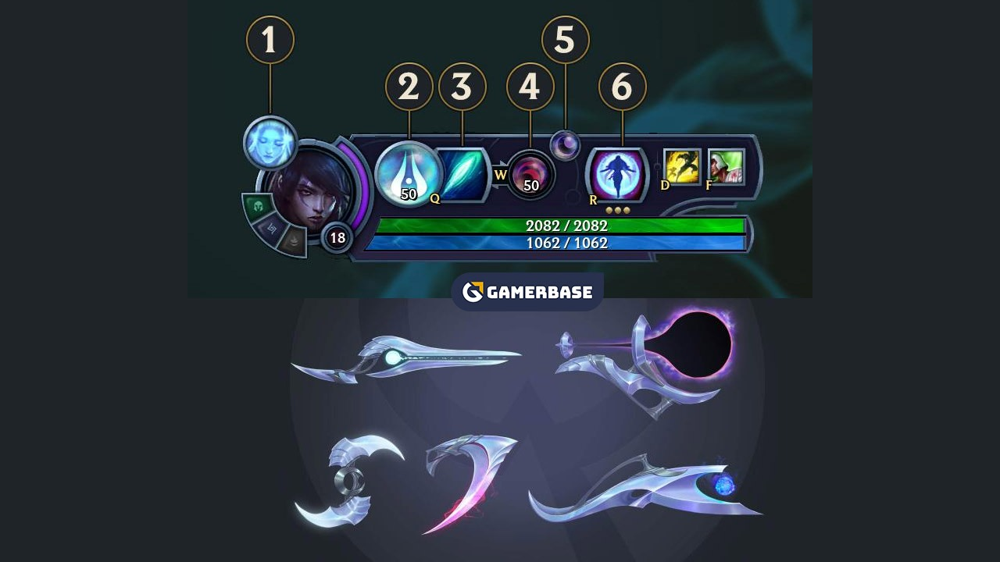
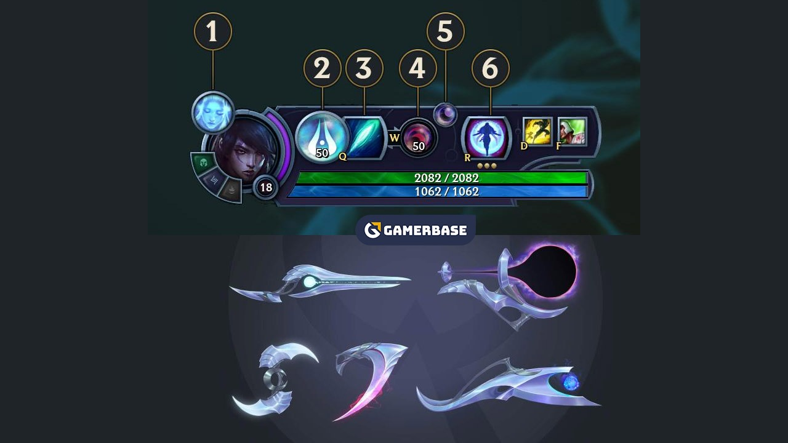

Ay, Targon Dağı'nın baş döndüren yükseklikteki yamaçları üzerinde asılı durur. Hem çok uzaktadır hem de gerçek olamayacak kadar yakın görünür. Targon Dağı'nda yaşayan Lunari inancı mensupları, maddi ayın ruhlar âlemindeki yansımasının gölgesinde kalarak tutulduğu nadir bir "ay kavuşması" sırasında doğan Aphelios'la ikiz kız kardeşi Alune'yi yazgının çocukları olarak görüp doğumlarını büyük sevinçle karşıladılar. İki çocuk kaderin işaretini taşıdıklarını biliyorlardı. Doğumlarını muştulayan göksel olayı yankılarcasına Aphelios bedence taş gibi sağlam, Alune de ayın ruhani yansıması gibi büyük bir sihir gücüne sahip olarak doğmuştu. Sofuluk derecesinde inançlı olan kardeşler gizem, derin düşünce ve keşif üzerine kurulu bir inanışta yetişti ve karanlığı sadece inançları yüzünden değil, onları koruyabilecek tek şey olduğu için kucakladı. Targon Dağı'nı yöneten Solariler, Lunarileri kafir kabul edip gizlenmeye zorlamıştı. Öyle ki çoğu artık Lunarilerin varlığını bile unutmuştu. Lunariler gölgelere çekilerek Solarilerin gözünden uzak tapınaklarda ve mağaralarda yaşamaya başladılar. Aphelios, diğer Lunarilere örnek olma zorunluluğu yüzünden büyük bir baskı hissediyordu. Tılsımlı ay taşından yapılma silahlarıyla yorulmak bilmeden çalışıyordu. Başkalarının kanını dökerek inancını koruyabilmek için idmanlarda kendi kanını döküyordu. Şiddetli duyguları olan ve çabuk incinen bir yapısı vardı. Başka arkadaşlıklar aramak yerine kız kardeşiyle çok derin bir bağ kurdu. Aphelios Lunarileri korumak için gitgide daha tehlikeli görevlere gönderilirken Alune ondan ayrı olarak kâhinlik eğitimi alıyor, parlak sihrini kullanarak gizli yolları ve gerçekleri ayın ışığıyla ortaya çıkarıyordu. Zaman içinde görevleri, Alune'nin kardeşiyle birlikte büyüdükleri tapınaktan ayrılmasını gerektirdi. Alune'den ayrı kalan Aphelios'un inancı zayıfladı. Kendine bir amaç bulmak için ne yapacağını bilemedi. Sonunda karanlıkların içine törensel bir yolculuk yapmaya gönüllü oldu. Lunarilerin bu yolculukta yörüngelerini, yani hayattaki amaçlarını bulacağı söylenirdi. Ayın ışığını takip ederek bir su birikintisine vardı. Suyun yüzeyinin hemen altında nadir bulunan noctum çiçekleri açmıştı. Bu çiçekler zehirliydi ama damıtıldıklarında içeni gecenin gücüne açık hale getiren bir sıvı elde ediliyordu. Noctum çiçeklerinin özünü içen Aphelios öyle büyük bir acı duydu ki başka hiçbir şey hissetmez oldu. Bundan kısa süre sonra, Marus Omegnum adlı kadim bir tapınak yüzyıllardır ilk defa ruhlar âleminden maddi âleme geçmeye başladı. Dağdaki Lunariler, semavi döngünün ilerleyişini ve güç dengesinin değişimini görmek için gizlendikleri yerlerden çıkıp toplandı. Tapınak her ortaya çıkışında, büyü gücü yüksek tek bir kişiyi içine kabul ederdi. Bu seferki Alune olacaktı. Yörüngesi onu tapınağa götürüyordu. Genelde hiçbir istekte bulunmayan Aphelios törene katılmayı rica etti. Fakat tapınak iki dünyayı ayıran örtüden ışıl ışıl bir sihir gösterisiyle geçerken, geceyi çok daha çiğ bir ışık doldurdu. Semavi döngü kendi lehlerine döndüğü halde Lunariler her nasılsa bulunmuşlardı. Bir Solari ordusu üstlerine saldırdı. Lunari kafirliğini ateş ve çelikle ortadan kaldıracaklardı. Her şey bitmiş gibiydi. Aphelios bile yenilmişti. Ay taşından silahları paramparça şekilde yerde yatıyordu. O, noctum özüne ulaşmaya çalışırken dudaklarındansa kan sızıyordu. Savaş devam ederken Alune de tapınağın derinliklerine doğru ilerliyordu. Merkezine ulaştığında, gerçek potansiyeli açığa çıktı. Aphelios noctum'un verdiği acının içinde Alune'nin gücünün onu sarmaladığını hissetti... ve onun sesini duydu. Kız kardeşi hafif bir fısıltıyla büyüsünü Aphelios'un ellerine uzattı. Büyü katılaşıp ay taşına dönüşerek kaybettiği silahların yerini aldı. Aphelios'un becerisi ve Alune'nin büyü gücü, ay ile ruhani yansımasının kavuştuğu gibi kavuştu. Solariler gün doğumunu görecek kadar yaşamayacaktı. Alune'nin gücü arttıkça genç kadın tapınağı Solarilerden korumak amacıyla onu içinde kendisiyle birlikte ruhlar âlemine itti. Alune tapınağın odaklayıcı etkisiyle artan büyü gücünü bir mihrak bulduğu sürece her yere yansıtabiliyordu. Aphelios'un damarlarında akan zehir de ideal bir hedefti. Yazgılarını ancak şimdi anlamışlardı. Aphelios acıyla kendi içini boşaltacak, bu sayede ayın gücüyle dolacaktı. Alune tapınakta tek başına yaşayacak ama dünyayı kardeşinin gözlerinden görebilecek ve ona rehberlik edebilecekti. Fedakârlık ve ıstırapla birbirlerine bağlanacak, birlikte Lunarilerin ihtiyaç duyduğu silah haline geleceklerdi. Sadece ayrı kalmaları halinde birlikte olabileceklerdi. Ruhları iki âlemi ayıran örtünün iki yanından birbirine değecek, hep uzakta ama inanılmaz derecede yakında olacaktı. Bütünleşip akıllarının ermediği bir şeye dönüşeceklerdi. Saldırıdan kurtulup tekrar dağın gölgelerine çekilen Lunarileri korumak için, Aphelios'un suikastçı becerilerinin kapsamı ve etkisi Alune'nin büyüsüyle ona yaptığı, birlikte tamamladıkları görevlerle mükemmel hale gelen çeşit çeşit silahla arttı. Targon'un güç dengeleri değiştiği ve Solariler Lunarilerin hâlâ hayatta olduğunu öğrendiği için Aphelios'la Alune'ye her zamankinden çok ihtiyaç var.